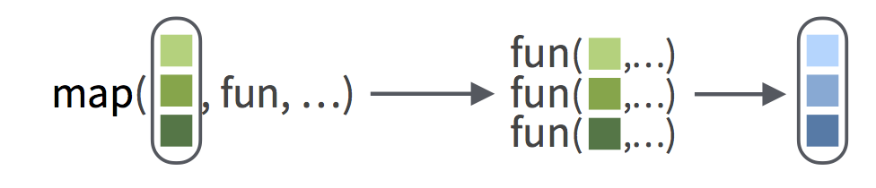

Las funciones map() están en el paquete purrr. purrr es un paquete con herramientas que pueden ayudarte a aplicar funciones en una forma iterativa.
purrr se instala cuando ejecutas run install.packages("tidyverse").
purrr se carga cuando ejecutas library(tidyverse)
purrr (ya está instalado) y luego haz click en Submit Answer.'Purrr-fecto. Ahora puedes usar las funciones purrr. También puedes instalar y cargar el paquete purrr sólo, sin los otros paquetes tidyverse. Para hacerlo, usa install.packages("purrr") y library(purrr).'library(tidyverse)El trabajo de la función map() de purrr es aplicar una función R a cada elemento de un vector R. map() requiere dos argumentos, en este orden:
map() funciona tanto con vectores simples como con listas.map() espera el nombre de la función sin las comillas alrededor y sin paréntesis detrás.En este ejemplo, map() aplica la función de valor absoluto a cada elemento de números negativos.
negativos <- list(-25, -31, -111)
map(negativos, abs)## [[1]]
## [1] 25
##
## [[2]]
## [1] 31
##
## [[3]]
## [1] 111Think of map() like this. Each circle of squares represents a vector, and each square represents an element of the vector:

list1 <- list(1, 2, 3, 4, 5)log() over the elements of list1. Then click Submit Answer.list1 <- list(1, 2, 3, 4, 5)map(list1, log)"Begin with map().""Make list1 the first argument of map().""Make log the second argument of map().""Do not put parentheses behind log. log returns the code stored in the log function. log() executes the code and returns the results, which would then be passed to map() (if log() didn't throw an error that is; log() needs an argument to execute the code successfully.)""Excellent. You can use map() with any function to iterate over the elements of a vector. map() will return the results in a list, which means that map() can handle whatever output your function creates. Why? Because you can put anything in a list."It may seem weird to you that map() takes a function as an argument, but it is not weird at all. In R, functions are objects that can be passed around just like everything else.
These questions will help you get a feel for it.
By the way, you will need to click Run Code above at least once before you can continue.
You give map() a vector and a function. map() always gives you a list. The nth element of the list will be the result of applying your function to the nth element of your vector.
This is convenient for two reasons:
map() can handle anything that comes out of your function, even a data frame. Why? Because you can put anything into a list.map() is easy to use in pipes because it takes a vector as its first argument and returns a vector (a list is a type of vector). Here’s an example.list1 %>%
map(log) %>%
map(round)list1 <- list(1, 2, 3, 4, 5)"Just click Submit Answer to see if your prediction is correct.""The code first took the log of each element with log(). It then rounded each answer to the nearest integer with round()."What if you want to pass map() a function that uses extra arguments?
For example, you would give round() an extra argument named digits if you wanted to round to a certain number of digits past the decimal place, e.g.
round(3.141593, digits = 2)## [1] 3.14You can pass extra arguments for your function to map() as if they were arguments of map(). map() will forward the arguments to your function when it calls the function. You will almost always want to name these arguments, e.g.
list1 %>%
map(log) %>%
map(round, digits = 2)## [[1]]
## [1] 0
##
## [[2]]
## [1] 0.69
##
## [[3]]
## [1] 1.1
##
## [[4]]
## [1] 1.39
##
## [[5]]
## [1] 1.61Can you do it?
base argument of log() to compute the base 2 log of each element in list1. Then click Submit Answer.list1 <- list(1, 2, 3, 4, 5)map(list1, log, base = 2)"Begin with map(list1, log).""Good job. You can pass as many arguments as you like through map(), be sure to separate each with a comma, e.g. map(list1, rnorm, mean = 1, sd = 2)."So far all of our functions have returned a list of numbers. This is a bit silly, because (as you’ve seen) it can be hard to work with lists.
What if you want to return the results as a simple vector (i.e. not a list)?
You could do that with map_dbl().
map_dbl() works exactly like map(), except it returns its results in a numeric vector. (dbl is short for “double”, the computer name for a number that can contain a decimal).
map_dbl() then click Submit Answer.map(list1, log)list1 <- list(1, 2, 3, 4, 5)map_dbl(list1, log)"Good job. Now your results come back as a numeric vector. This is useful. For example, you could pass the results directly to round() without using another call to map(): list1 %>% map_dbl(log) %>% round()."But suppose our function does not return doubles. For example, str_sub() from the stringr package returns characters. Here, it will return the first character in each string.
library(stringr)
strings <- list("Mary", "John", "Jill")
map_dbl(strings, str_sub, start = 1, end = 1)The code didn’t work because str_sub() returns a set of characters, but map_dbl() builds a double (numeric) vector.
In R, each non-list vector has a type. You can only save doubles in a double vector. You’d save characters in a character vector. Are you out of luck?
No. purrr provides eight versions of map(). Each returns its results in a different format.
| Function | Output |
|---|---|
map() |
list |
map_chr() |
character vector |
map_dbl() |
double (numeric) vector |
map_dfc() |
data frame (output column binded) |
map_dfr() |
data frame (output row binded) |
map_int() |
integer vector |
map_lgl() |
logical vector |
walk() |
returns the input invisibly (used to trigger side effects) |
The last function, walk(), is used for functions that do not return an output to the command line, like functions that plot graphs or save files.
The idea behind purrr is that you can choose the map function that returns the type of output that you need.
map_dbl() in the code below . Choose the replacement that will make the code work. Then click Submit Answer.strings <- list("Mary", "John", "Jill")
map_dbl(strings, str_sub, start = 1, end = 1)"str_sub() returns characters."strings <- list("Mary", "John", "Jill")
map_chr(strings, str_sub, start = 1, end = 1)"Great job. Now let's cement our knowledge of `map()` by using it to solve a data wrangling challenge."ldeaths is a list that records monthly deaths in the UK from lung disease. The data spans the years 1974 to 1979, and is divided year.
ldeaths.ldeaths"This is the data you will explore. ldeaths is a reformatted version of the ldeaths time series that comes in base R."It would be helpful to know how many people died each year from lung disease. Then you could see if deaths decreased over time. Can you find out?
ldeaths. Then click Submit Answer."The sums will be numbers (doubles)."map_dbl(ldeaths, sum)"Good job. It looks like deaths went down over time (slightly). Did you use map() or map_dbl()? Both will work, but map_dbl() will return your results in a format that is easier to inspect and use."Take it a step further.
"This will take two steps.""The second step will be easier if you use map_dbl() in your first step."sum(map_dbl(ldeaths, sum))"Good work. First, you summed each vector. Then, you summed the results. It is easiest to sum the results if you use map_dbl() to sum the vectors."Now that you are doing multi-step operations, you should begin using the pipe operator if you aren’t already. The pipe operator (%>%) is great for single step operations too.
Take a moment to convert this code to use the pipe operator. Then click Submit Answer.
Note: Recall that the pipe operator takes the output of whatever is on its left hand side and passes it to the first argument of the function that is on its right hand side. So x %>% f() is the same as f(x) and x %>% f() %>% g() is the same as g(f(x)).
sum(map_dbl(ldeaths, sum))"You will need to use two pipe operators to convert this expression into a pipe."ldeaths %>%
map_dbl(sum) %>%
sum()"Use pipes for the rest of this case study. Pipes make it easy to build on previous work and to transform your data one step at a time. I can't recommend pipes enough."Let’s sum across months to see if there is a seasonal effect.
Mathematically, this is as simple as your previous computations. Programatically, it is a challenge: your data is not set up in a way that makes it easy to sum across months. You’ll need a strategy.
If you’ve taken the Work with Data primer recently, you might have a strategy in mind:
summarise() function to sum the columns.Do just that, but fair warning: you’re going to bump into a couple of surprises—just like when you wrangle data in real life.
For Step 1, you can use a map function to combine your vectors into a data frame. Do you recall which map functions return a single data frame? There were two of them.
map_dfr() adds each element to the first as rows (exactly what you want)map_dfc() adds each element to the first as columnsBut each function expects to iterate over a set of data frames and ldeaths contains a set of vectors. To make map_dfr() work, you will need to pass it a function that turns the vectors in ldeaths into data frames for map_dfr() to combine.
R has many functions that can turn a vector into a data frame: data.frame(), as.data.frame(), data_frame(), as_data_frame(), are some of them.
I prefer to use as_tibble(). as_tibble() converts the vector to a data frame and adds the helpful tibble class to the data frame. As a result, the data frame prints nicely at the command line.
as_tibble() to convert the vector below into a data frame.named_vec <- c(uno = 1, dos = 2, tres = 3)
named_vecnamed_vec <- c(uno = 1, dos = 2, tres = 3)
as_tibble(named_vec)"Good job. as_tibble() comes in the tibble package, as do as_data_frame() and data_frame(). Like purrr, the tibble package is a member of the tidyverse."Now that you know how as_tibble() works,
map() to map as_tibble() over the vectors in ldeaths. Then click Submit Answer. (For now, use map() instead of map_dfr(), this will help you see what happens step-by-step as you wrangle the data.)ldeaths %>%
map(as_tibble)"Good job, you made each vector a tibble (i.e. a data frame)! But there is something funny happening here. Let's investigate."as_tibble() turned each vector into a data frame with one column. If you want the data frame below, you’ll need to turn each vector into a data frame with one row (that way map_dfr() can stack the rows on top of one another).
If you try running map_dfr() on our current output, it will stack your columns on top of one another to make a data frame with one long column. Go ahead, try it.
ldeaths %>%
map_dfr(as_tibble)ldeaths %>%
map_dfr(as_tibble)"That's not what you want."Even though R displays simple vectors as if they were row vectors, R thinks of every vector as a column vector, even if that vector has names. So why display the vector as a row vector? To save screen space.
ldeaths[[1]]## Jan Feb Mar Apr May Jun Jul Aug Sep Oct Nov Dec
## 3035 2552 2704 2554 2014 1655 1721 1524 1596 2074 2199 2512You can get the data frames you want if you first transpose the column vectors in ldeaths to row vectors.
R’s t() function does just that.
ldeaths[[1]]## Jan Feb Mar Apr May Jun Jul Aug Sep Oct Nov Dec
## 3035 2552 2704 2554 2014 1655 1721 1524 1596 2074 2199 2512t(ldeaths[[1]])## Jan Feb Mar Apr May Jun Jul Aug Sep Oct Nov Dec
## [1,] 3035 2552 2704 2554 2014 1655 1721 1524 1596 2074 2199 2512Don’t be fooled by the way R displays the vectors. R only thinks of the second vector as a row vector. You can tell by the bracket notation in front of the vector. It indicates that this is the first row of the result (but you can ignore the notation if it doesn’t interest you).
Now you can finish Step 1.
map() to apply t() to each vector in ldeaths.map_dfr() to map as_tibble() over the transposed results. map_dfr() will combine the output into a single data frame.ldeaths %>%
map(t) %>%
map_dfr(as_tibble)"Excellent. Now you can finish."How would you extend this code with summarise() from the dplyr package to compute the monthly totals?
(You may need to take the Work with Data Primer to understand these final three sections.)
ldeaths %>%
map(t) %>%
map_dfr(as_tibble)Here’s a surefire way to do it, but it requires a lot of typing; I’m summarising every column in the data frame. Let’s use a shortcut instead.
ldeaths %>%
map(t) %>%
map_dfr(as_tibble) %>%
summarise(Jan = sum(Jan),
Feb = sum(Feb),
Mar = sum(Mar),
Apr = sum(Apr),
May = sum(May),
Jun = sum(Jun),
Jul = sum(Jul),
Aug = sum(Aug),
Sep = sum(Sep),
Oct = sum(Oct),
Nov = sum(Nov),
Dec = sum(Dec))dplyr contains a variant of summarise() named summarise_all(). To use summarise_all() give it a data frame and then one or more functions to apply to each column in the data frame. summarise_all() will apply each function to every column and return the results as a summary table.
summarise_all() and the code below to sum across months. Look at the hints if you get stuck. Then click Submit Answer.ldeaths %>%
map(t) %>%
map_dfr(as_tibble)"You do not need to pass summarise_all() a data frame; it will inherit one from the pipe."ldeaths %>%
map(t) %>%
map_dfr(as_tibble) %>%
summarise_all(sum)"Great Job! You can see a strong seasonal effect in the data: more lung related deaths happen in winter. You were able to do this because of the work you put into wrangling the data with purrr. Give yourself a pat on the back!"Congratulations on making it to the end. You’ve learned the ins and outs of iterating with map(), but there is more to know.
map()’s syntax shortcuts. It will also show you what to do when you cannot find a function to map that does what you want.